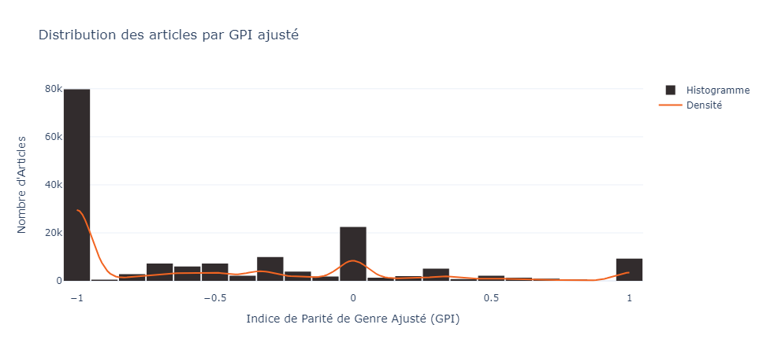
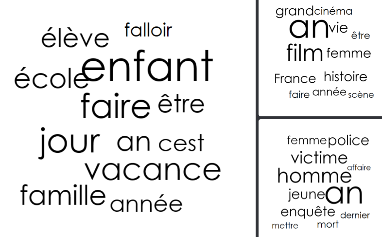
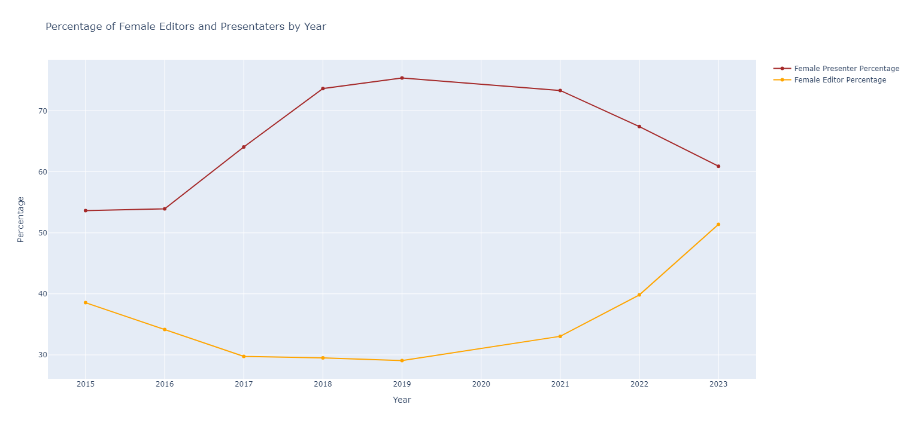
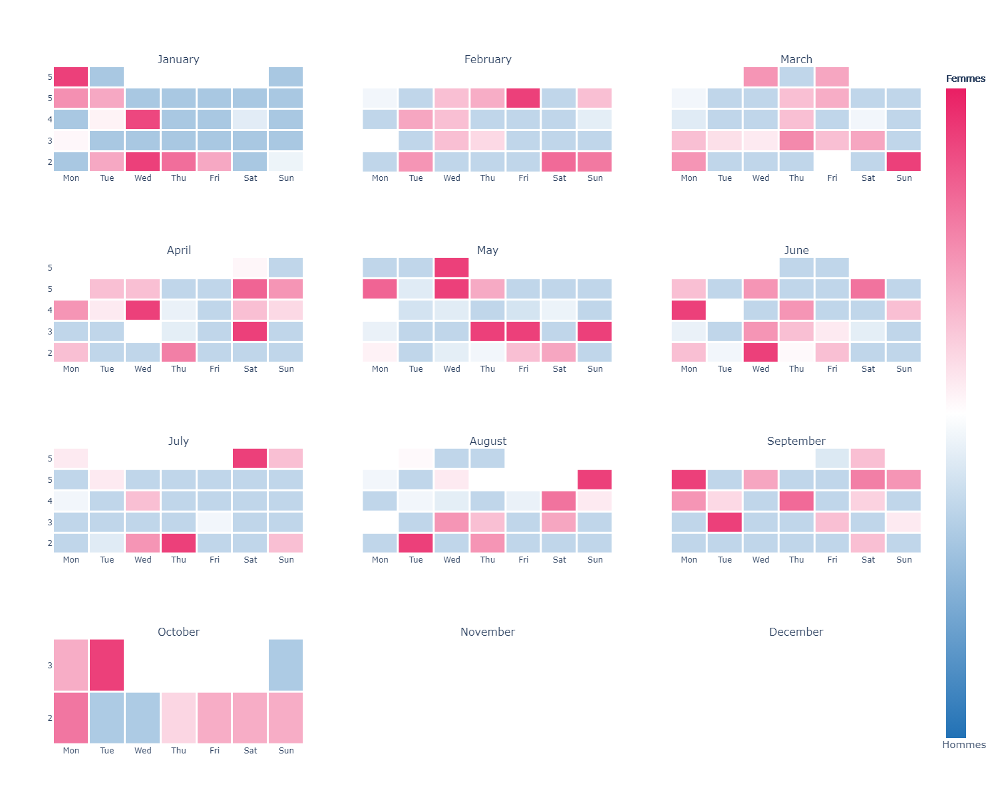

FEMMES & MEDIAS
Accueil
Analyses
Bibliographie
À Propos
Carte de Chaleur des Indices de Parité des Genres par clusters et médias

Distribution de l'indice de Parité des Genres
Relation graphique des clusters issus du LDA

Nuage des mots les plus présents Par Clusters

Graphique en Courbe représentant l'évolution du pourventage de femme présentatrices et éditrices de 2013 à 2023

Carte de Chaleur façon calendrier des Indices de Parité des Genres sur en 2023.